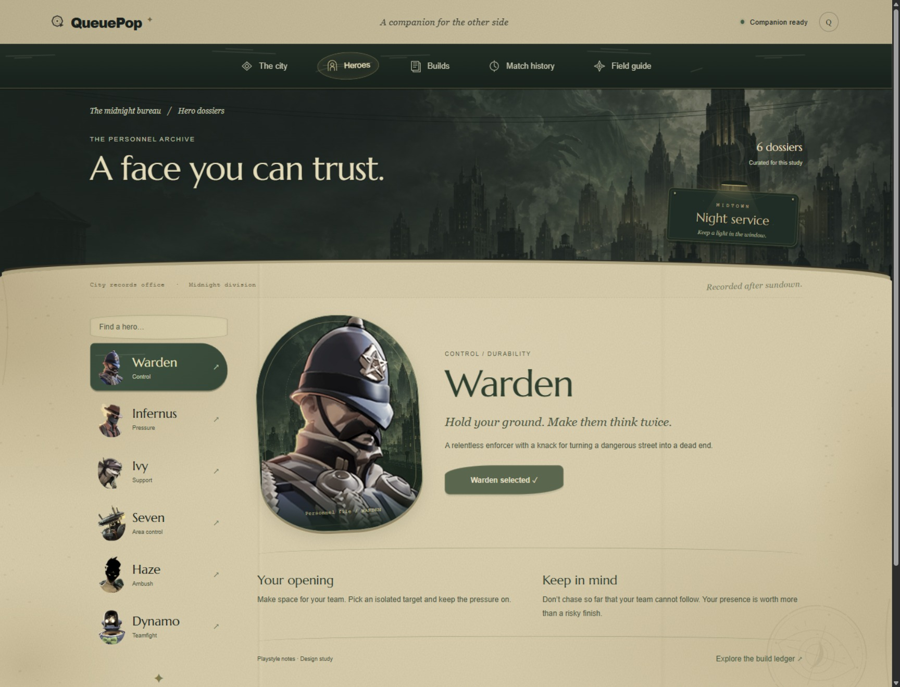
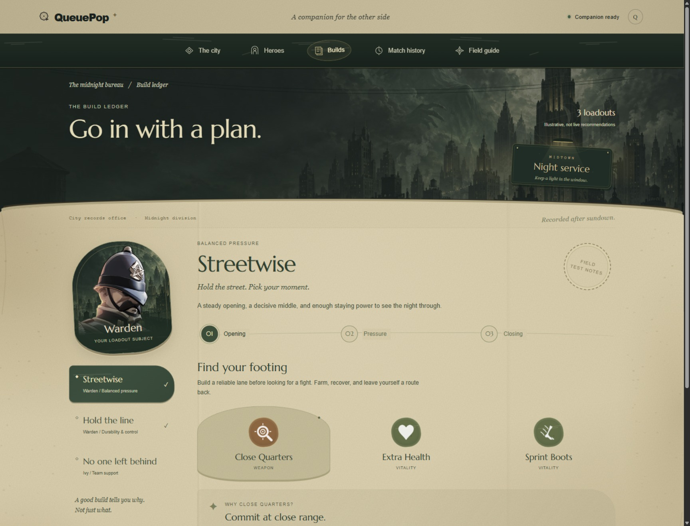
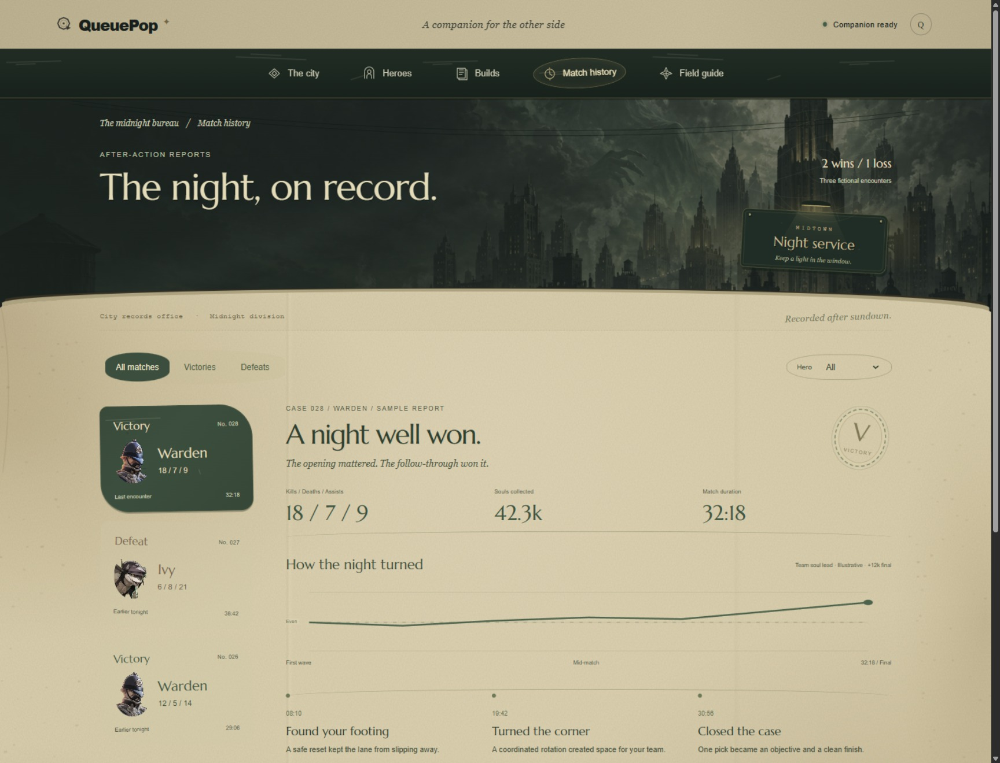

More atmosphere, with the reading areas kept clear: worn paper, folded records, scratched portrait glass, faded civic seals, and an old lamplit sign against the haunted skyline. Dedicated pages and persistent navigation remain.
Before · The clean page
The previous full-page hero archive.
Now · The night office
Weathered materials, city-backed portraits, and night-service details. Texture stays beneath the text.

The build ledger
Worn brass and paper. Item explanations and selections remain clear.

After-action reports
Faded stamps and fold marks around the fictional encounter record.

The city entrance
The same worn materials carry through the outer frame, navigation, and ticket.Earlier directions
The original supplied V2 screenshot.The earlier popup build ledger, since replaced by dedicated pages.